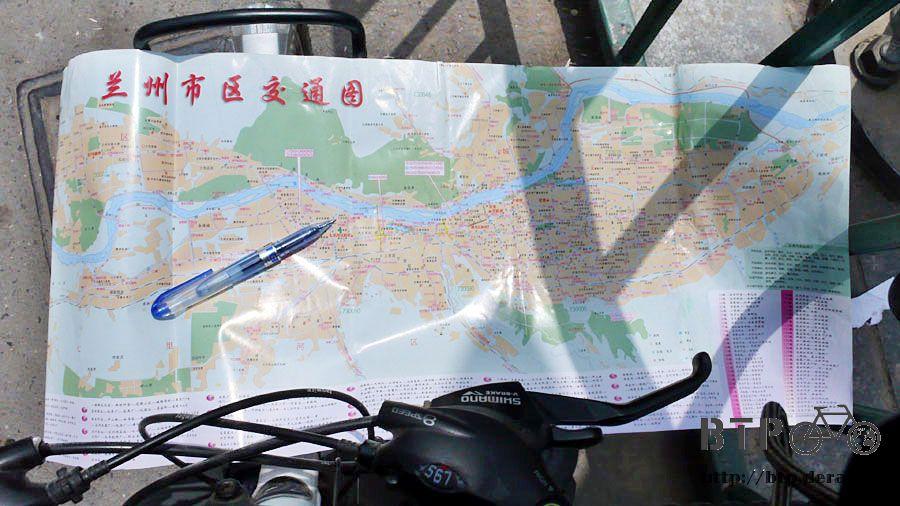
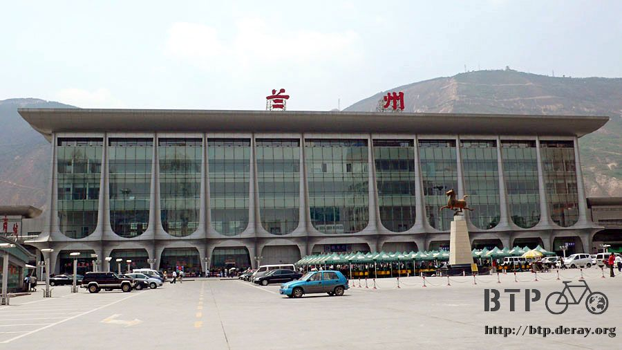
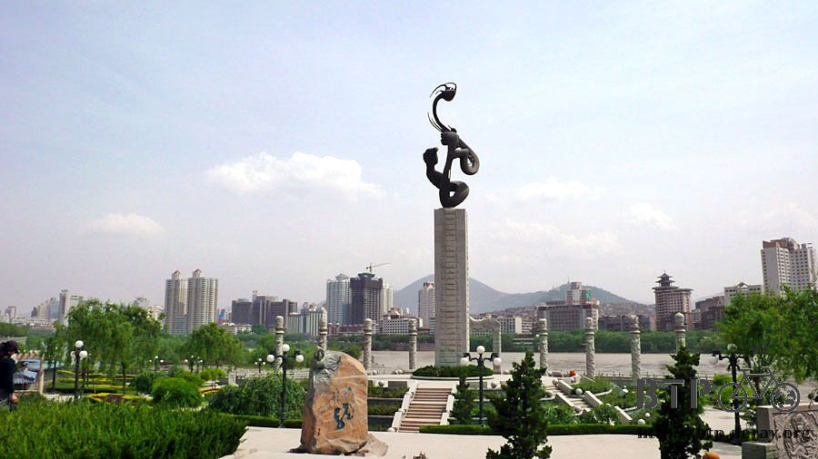
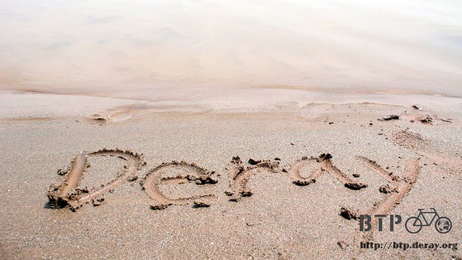
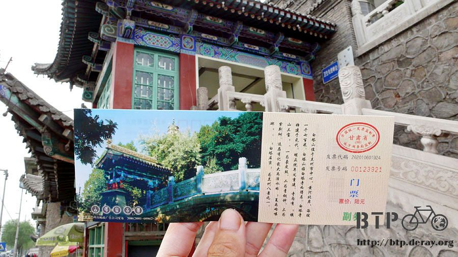
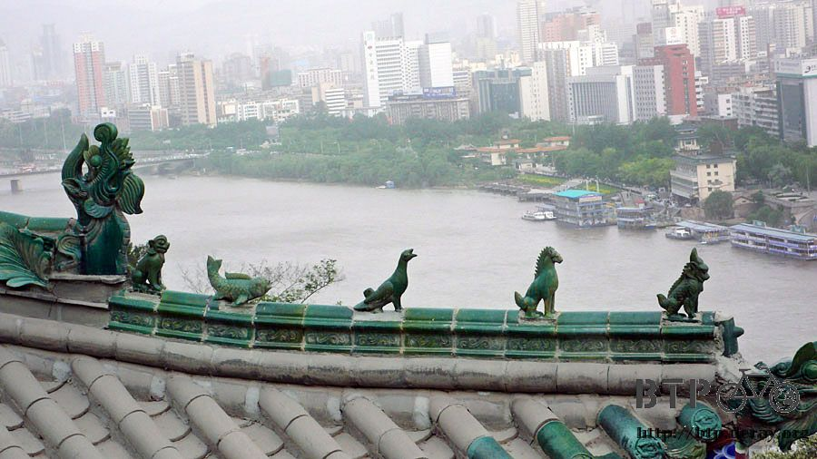
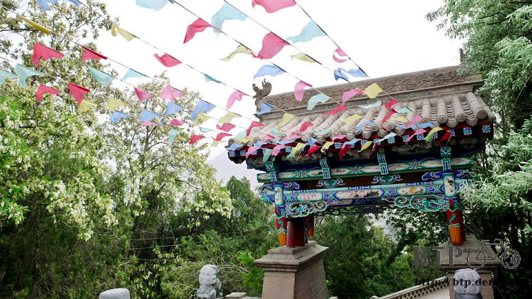
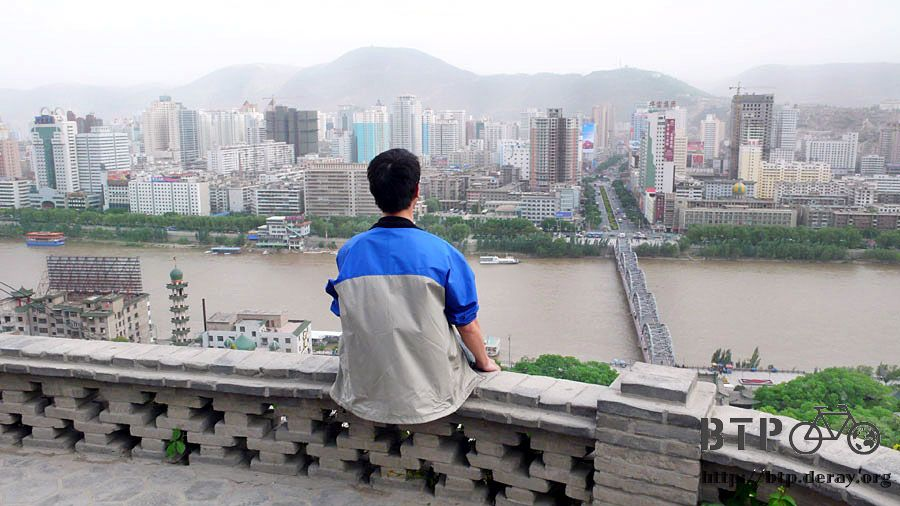

聽風的歌
在我花三塊錢從報攤買到蘭州市地圖之後，我突然發現其實今天還蠻多地方可以殺時間的。
從北京出發，騎車繞了一圈的我，不知不覺又重新騎回黃河流經的城市。
蘭州市整個被黃河給貫穿，有點像是巴黎被塞納河貫穿的感覺。

在巴黎的塞納河畔，多的是各種的咖啡店、藝術家、小販和觀光客。
其實在蘭州的黃河河畔，景色也是大同小異，只是咖啡廳變成啤酒小店，
觀光客少很多，各式各樣奇怪的小販令人拍案叫絕，包括花五毛錢來秤量你身高體重的流動體重機小販~_~

拿到地圖之後，我習慣性的先往火車站方向移動，結果一開始就很迷路。
蘭州一共有三個火車站，蘭州東站、蘭州站和蘭州西站，因為離我最近的地方是東站，所以我就往那邊騎。
但是卻沒有路可以繞過鐵軌，只好有樣學樣跟著爬上煤灰堆成的小山，牽著自行車走在鐵軌上。
跨過了鐵軌還是找不到東站，這邊只是一個貨物集散地而已，還有很多的工廠(尤其是兵工廠=.=)
並不是真的那種有月台，可以讓乘客上下車的火車站。
背著山而建蓋的蘭州火車站，看起來還蠻不小的，從這邊當做今天的起點。
蘭州大學一日遊就不管它了，因為蘭州有一大堆的蘭州大學，大家都用同一個名字~_~

今天計畫是先到黃河河畔去，看『黃河第一橋』(聽名字應該就是第一座建立在黃河上的橋)

它是一座鐵橋，禁止車輛通行，但是行人和自行車是OK的。
很多小販會在這邊兜售照相的服務，拿著別人之前拍的照片當作範例，
走在這邊，就會一直被問要照相嗎？但只要把相機拿出來拎在手上，就不會有小販繼續問你了。

在黃河的另一邊，找到一個龍源公園，看來可以在那邊玩水。
騎著小多進去，在公園裡面賣飲料的店員說自行車可以進來，但是不能在裡面騎，就放他這邊，他會幫忙顧。
我心裡想說他人怎麼這麼好，還幫我顧車子，結果原來是要收費的~_~但是才三毛錢，那就不計較。

先走到河邊，有個樓梯可以直接走進黃河裡，然後脫掉鞋子跟襪子，踏進那超冰的河水中

不能用冰涼來形容，用冰凍會比較適當，沒辦法泡在水裡面超過10秒鐘，腳會被凍得刺痛發紅>"<

可能這邊還算是黃河的上游部分，還沒有被沿岸工廠排放的廢水汙染的關係吧，水看起來還蠻乾淨的。
長這麼大，第一次親身接觸到黃河，河水如此的冰凍，真是不可思議，裡面如果有魚的話，應該都結冰了吧。

滿足我泡黃河水的心願之後，今天的目標就達成了一個。
第二個目標是在河畔邊的太陽傘小販，買一瓶『黃河啤酒』喝，一瓶3.5元，有點貴，但是也還好。
坐在河邊，看著當地人下象棋，那種『每個人都有意見』的象棋玩法實在是太有趣了。

比的根本不是誰的棋藝好，而是誰的啦啦隊主意比較多。
看著看著，我居然也大聲的脫口而出說『上馬』，跟著加入這場戰局 :D
真的很有趣說！因為亂講就算講錯也沒關係，是負責下的那個人會被碎碎唸說怎麼下得那麼爛，自己一點責任也沒有。
蘭州自己就有啤酒工廠，生產很多很多的啤酒，所以大家都在這邊不停的喝啤酒。
很像德國啤酒節那種感覺，啤酒好像是免費的一樣，可是切切實實是要花錢買的orz
後來在街上，我真的發現有啤酒狂歡廣場，裡面有一千多個座位吧。
一堆人在裡面喝酒聊天玩牌哈拉，圍繞著座位一圈的是各式各樣的小吃攤販，碳烤什麼的一定是生意興隆，
但是令我感到訝異的是，居然也蠻多清真的餐廳在這邊做生意，因為他們不能喝酒，
可是在賣酒的場合討生活，想必對自己的戒律應該有某種程度的考驗吧。
離開黃河畔，蘭州的鬧區也是和台北市不遑多讓，看著地圖，這邊的電影院就有六、七間。
票價只要十塊或是十五塊，本來打算今天要是沒事做的話，就去看『蜘蛛俠三』(這邊的翻譯~_~)。
但是中文發音這一點讓我非常的猶豫，幹嘛沒事搞個中配呢~"~
蘭州又稱為果都，這邊盛產各式各樣的水果，像西瓜、白蘭瓜、櫻桃、蜜桃、荔枝，各式各樣的東西。
站在一間水果攤前面，我開始流口水....

除了要切開才能吃的大型瓜類，其他小的像是櫻桃、荔枝，老闆都讓我試吃看看。
而且非常得意的說『怎麼樣？甜吧！這些都是蘭州本地產的，最好吃的水果。』
的確相當的好吃，試吃過之後讓我更加的煩惱要買什麼。
後來買了白蘭瓜，一斤五塊，買兩粒秤過之後是九塊錢，請老闆幫我切開，現吃一粒。
大概比香瓜大一點的大小，橢圓形的形狀，味道有點像是哈密瓜，果肉口感比較硬，但又比香瓜軟。
總之真的是很甜很好吃的水果呀:P
今天泡過了冰凍的黃河水、在河畔喝了當地的啤酒、也吃到了白蘭瓜，我的三個目標都達成了。
回去旅館將小多停好，下午搭公交到白塔山公園優閒的散步。

本來沒打算去這個地方，因為我根本不知道這裡是哪裡，但是到中山橋(就是黃河第一橋)的時候，

一過橋就可以看到山上有很多廟宇式的建築，可以說很普通，也可以說很漂亮。
早上就先研究過門票是六塊錢，很便宜，自行車不能進去，所以得搭公交來才行。

蘭州地圖上有簡單的白塔寺說明，這邊是個沿著山建立的寺廟，最高處海拔1700公尺有一座白塔寺，
這邊約比市區高出200公尺左右，可以從山頂眺望整個蘭州市。
輕鬆的爬著樓梯，灰泥磚大概是這邊的主要建材。

因為質地很軟，用力一點扳就可以剝落一部分，而八成以上的磚石都被沒公德心的觀光客刻上了名字。
可以說很有趣，也可以說很遺憾，就連山頂那座白塔寺，靠近仔細一看，
也會發現上頭都是刻字，明明就用圍欄圍起來，但似乎沒有人在意這一點，
只在乎是否能留下『某某某到此一遊』的痕跡。
中國的寺廟有自己的風格，玉石雕刻的動物在寺廟的屋簷上排列著。

白塔寺很小，像個保齡球瓶，高約17公尺，建於元朝西元1228年，距今大概有八百年歷史。
是為了紀念一個喇嘛，白塔七級八面，掛滿了風鈴，風一吹過，悅耳的叮叮噹噹聲不絕於耳。

今天是星期二，來玩的人很少，所以非常的安靜，只有一位南京來的氣質男請我幫他拍張和塔的合照。
坐在塔前的屋簷下，吹著涼涼的風，閉上眼睛聽著風所演奏的歌，心裡非常平靜。
風鈴叮噹的聲音彷彿可以直接傳到天空的最高處，或是聆聽者心裡的最深處。

一路從山下走上來，沿路都是被風吹落的不知名花瓣，比較堅韌的花就在樹上隨著大風搖來晃去，
偶爾幾片花瓣就被風給吹落，然後高高的捲起在半空中，最後落下會成為花瓣地毯的其中一片。

在白塔寺待的時間比我預期的要長很多，本來只想來眺望蘭州，沒想到山上的景色和氣氛這麼宜人。

越往西北走，太陽下山的時間漸漸的往後延了，現在連晚上八點也還是明亮的天空。
來的路上搭公交，回去打算用走的，大概一小時的步行距離。
雖然蘭州我不熟，但是今天我所認識到的蘭州，都令我留下絕佳的回憶。
真的很高興自己可以在這個城市遊蕩一天。
甘肅和蘭州一樣，也是狹長型的城市，東南方還算熱鬧，越往西北走，降雨量就遽減，
期待已久的沙漠，已經不遠了～
繼續閱讀：5.16 河西走廊
中國-人民幣－ 1：4.3 台幣
5.15 |
總計：58.3元 |
早餐水煎包五顆1元、蘭州市地圖3元、小多停車費3毛、午餐牛肉麵5元、白蘭瓜兩粒9元、白塔寺門票6元、公交1元、冰棒1元、晚餐烤羊肉串10元、黃河啤酒3元、住店20元 |
|